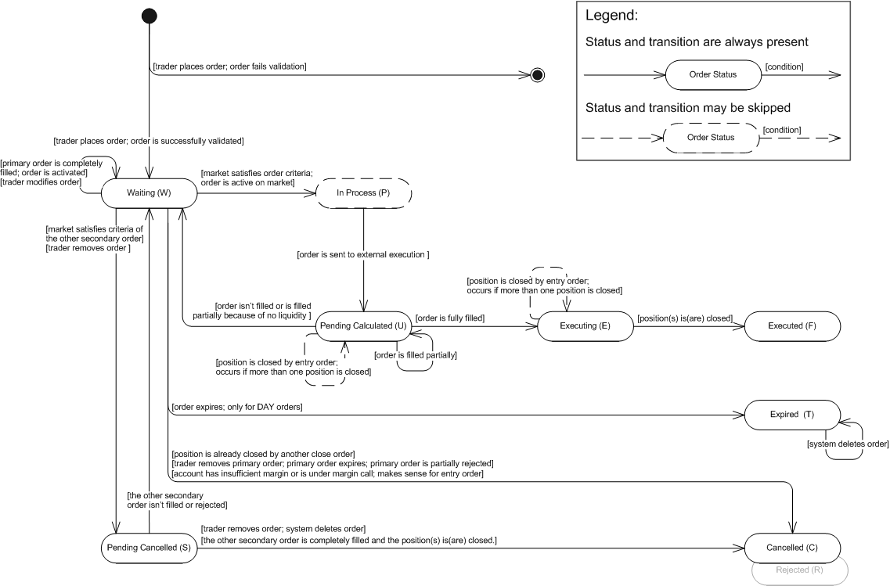

The article describes the ELS (Entry-with-Limit-and-Stop) contingent order.
An ELS (Entry-with-Limit-and-Stop) Contingent Order is a contingent order consisting of two (or three) linked orders: one primary order and either one or two secondary orders. The primary purpose of the ELS contingent order is to open a position and attach a stop loss and a take profit orders to it. When the ELS contingent order is placed, the primary order becomes active while the secondary orders remain inactive. Once the primary order is executed, the secondary orders are automatically triggered (activated).
Either an entry or a market order can be a primary order. Only an entry limit or an entry stop order can be a secondary order. The ELS contingent order may include only one limit and one stop order. The trade operation of the secondary orders is opposite to the trade operation of the primary order; the amount is equal to the amount of the primary order. The price of the secondary order can be specified in absolute value. Another way is to specify an offset from price the primary order is executed at or from market price at the moment the primary order is executed. The orders with price offset are also called peg orders.
The time-in-force options and execution details for a primary order are the same as those an Entry Limit, Entry Stop and Open Market, Open, Open Limit, Open Range orders.
The time-in-force options execution details for a secondary order are the same as those for either an Entry Limit Order or Entry Stop Order.
As it was said above, secondary orders become active only after the primary order is completely executed. Once the market satisfies criteria set in one of the secondary orders, the other secondary order becomes inactive and is about to be rejected. It finally gets rejected when the first secondary order is completely filled. If the first secondary order cannot be filled/is filled partially due to the lack of liquidity, the order becomes active again. See execution Scenario 1, Scenario 2.
When the primary order is executed partially, the system creates additional secondary orders. These orders are active and their amount equals the amount of the newly opened position. The amount of the initial secondary orders is, thus, reduced, i.e. becomes equal to the remaining amount of the primary order. When the last portion of the primary order is filled, the initial secondary orders are activated. But if the primary order is partially rejected, the initial secondary orders are cancelled. See execution Scenario 3, Scenario 4.
As it was said above, when the primary order is executed and a position is opened, the secondary orders are activated. It is possible that the position is closed completely or partially, but not by one of the active secondary orders. In case the position is closed partially, the amount of the secondary orders is reduced, i.e. becomes equal to the remaining amount of the position. If the position is closed completely the secondary orders are cancelled.
In case there are more than one opened positions the system checks each secondary order amount against of net amount of all open positions and reduces secondary orders amount to the net amount if necessary. In such way the system prevents an opening of the opposite positions by entry stop/limit order then the positions are completely closed. If the positions are closed completely by one of the secondary orders or by other order the remaining active secondary orders are cancelled. See execution Scenario 5.
If the primary order expires (makes sense only for orders with DAY time-in-force option), all secondary orders expire as well.
If the primary order is cancelled by the trader, the secondary orders are automatically cancelled.
If a secondary order is cancelled by the trader, this doesn’t affect the other secondary order.
If the primary order is rejected (for example, doesn’t pass validation), the secondary orders are automatically cancelled.
If the primary order is partially rejected (for example, doesn't completely filled because of IOC time-in-force option), the secondary orders are automatically cancelled.
If a secondary order is rejected due to unsuccessful validation, this doesn’t affect the primary order and the other secondary order.
If the market satisfies a secondary order criteria, but there are insufficient funds in the account, the order is rejected.
The ELS secondary order state machine is based on the FXCM order statuses. The state machine, description of order statuses, and their transitions are provided below. Note that the order is created by the system only after successful order validation. If the order does not pass validation, the system creates a rejection message and does not store the order in the database. However, the information about the order (such as, for example, the order ID and the reason for its rejection) is stored in the database. So, the initial transition on the diagram indicates that the order is successfully validated.
ELS Secondary Order: State Machine

ELS Secondary Order: FXCM Order Statuses Description
Order Status |
Order Status Description |
Transition |
||||||||||
Waiting (W) |
The status has one of the following meanings:
|
|
||||||||||
In Process (P) |
The market price satisfied the criteria set in the secondary order; the order is ready for further execution. |
|
||||||||||
Pending Calculated (U) |
The status has one of the following meanings:
|
|
||||||||||
Executing (E) |
The secondary order was completely filled. |
|
||||||||||
Executed (F) |
A position was closed. |
|||||||||||
Expired (T) |
The status is applicable only to DAY orders: |
|
||||||||||
Cancelled (C) |
The status has one of the following meanings:
|
|||||||||||
Pending Cancelled (S) |
The status has one of the following meanings:
|
|